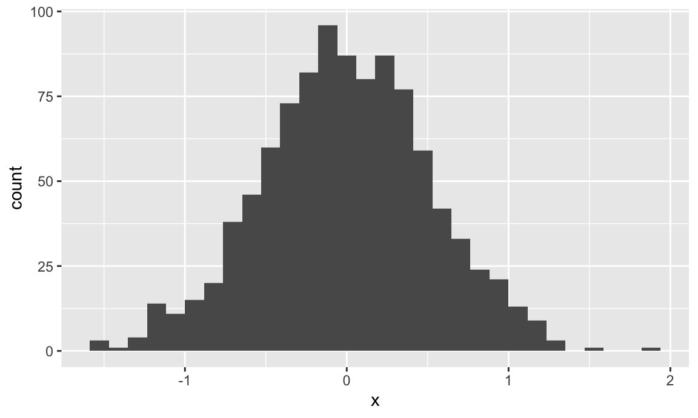
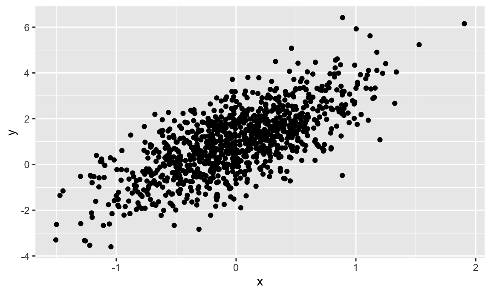

This is the first module in the Building Blocks topic.
We’ll be getting up-to-speed on the basic tools in R. As part of that, we’ll define and establish some good habits.
You’ve probably been using computers for as long as you can remember, but now is a good time to develop intentionality in how you use a computer for work. In the context of this class, and in your professional life more broadly, a computer is the tool you use to execute specific tasks; the more skilled you are in using a computer as a tool, the better off you’ll be.
Think of your computer the way a chef thinks of a kitchen – being able to find and use something exactly when you need will make your work process more seamless. As Ellen Bennett says in this article, “It’s about not having to do the extra work” that comes from looking for a tool when you need it. A bit closer to the topic of this class, Hilary Parker convincingly argues that “increased fluency and mastery of the tooling means that the practitioner can create uninhibited.”
Today we’re going to talk a lot about using R and being organized. Beyond that, getting in the habit of using an application launcher / productivity application (like Alfred for OSX or maybe Launchy for Windows 10) will help you quickly navigate on your machine, saving time and effort. You should also get in the habit of using keyboard shortcuts, both in RStudio and elsewhere on your machine.
Launch R Studio and take stock – find the Console, the Environment/History, and the Files/Plots/Packages/Help. This is also a good time to set some preferences – I like to turn off saving the workspace and history, and also turn on a lot of the R code diagnostics.
Create a new R script using File > New File > R Script. Write a short comment section describing what this is, and follow along with the code below!
##################################################################
# Sept 5, 2020
# Jeff Goldsmith
#
# Script for exploring R!
##################################################################As part of Homework 0, we installed a lot of packages. You don’t need to re-install those each time you need them, but you do need to load packages you want to use with the library function. Although we won’t use it yet, I’m going to load the tidyverse package now.
library(tidyverse)
## ── Attaching packages ─────────────────────────────────────────────────────────────────────── tidyverse 1.3.0 ──
## ✓ ggplot2 3.3.0 ✓ purrr 0.3.4
## ✓ tibble 3.0.1 ✓ dplyr 1.0.2
## ✓ tidyr 1.0.2 ✓ stringr 1.4.0
## ✓ readr 1.3.1 ✓ forcats 0.5.0
## ── Conflicts ────────────────────────────────────────────────────────────────────────── tidyverse_conflicts() ──
## x dplyr::filter() masks stats::filter()
## x dplyr::lag() masks stats::lag()You can do basic computations in R, either on the command line (in the console) or by writing things in the script and executing the code in the console. Note that you can execute commands (e.g. the line with the cursor or highlighted code) in the console from a script using Command+Enter (Mac) or Ctrl+Enter (Windows).
2 + 3
## [1] 5
(18/3 + 1*2) ^ (4 - 2) - 6.18273
## [1] 57.81727Before long, you’ll do all your arithmetic in R!
Computation is great, but you need to be able to assign objects to names.
x = (18/3 + 1*2) ^ (4 - 2) - 6.18273
y = c(1, 3, 6, 9)
x + y
## [1] 58.81727 60.81727 63.81727 66.81727When making assignments, R assumes you don’t want to see the result. If you do want to see the result, you’ll have to ask for it. You can also apply functions to objects.
x = runif(20)
x
## [1] 0.880909090 0.039271426 0.326627501 0.540389755 0.575707673 0.745155287
## [7] 0.670467087 0.025757785 0.936109769 0.765144816 0.356391120 0.898860618
## [13] 0.380006271 0.731422100 0.118216277 0.004406423 0.333236786 0.595282739
## [19] 0.722153966 0.283580027
mean(x)
## [1] 0.4964548
var(x)
## [1] 0.09164264We’ve created two variables, x and y – these now exist in the environment. You can see everything in the environment using ls() on the command line, or check out the environment pane in RStudio.
(If you care about these things, people have opinions about assignment operators. I don’t have such strong opinions about this, and don’t care much if you use = or <-.)
R can handle several data types in addition to numbers. To illustrate this, I’m going to create a quick data frame using the tibble function and manually check the class of some of the variables. This is also a good time to point out RStudio’s tabbed autocompletion – start typing a variable name and press Tab.
example_df = tibble(
vec_numeric = 5:8,
vec_char = c("My", "name", "is", "Jeff"),
vec_logical = c(TRUE, TRUE, TRUE, FALSE),
vec_factor = factor(c("male", "male", "female", "female"))
)
example_df
## # A tibble: 4 x 4
## vec_numeric vec_char vec_logical vec_factor
## <int> <chr> <lgl> <fct>
## 1 5 My TRUE male
## 2 6 name TRUE male
## 3 7 is TRUE female
## 4 8 Jeff FALSE femaleWe’re going to spend a lot of time talking about data frames over the course of the semester, starting in Data Wrangling I. For now, just think of it as a rectangle that holds data you care about.
Base R comes equipped with plotting but – just giving you a heads-up – if you use base R graphics people might give you a hard time.
Instead, we’ll use ggplot; a basic example follows.
set.seed(1)
plot_df = tibble(
x = rnorm(1000, sd = .5),
y = 1 + 2 * x + rnorm(1000)
)
ggplot(plot_df, aes(x = x)) + geom_histogram()
## `stat_bin()` using `bins = 30`. Pick better value with `binwidth`.
ggplot(plot_df, aes(x = x, y = y)) + geom_point()
We’ll go through plotting in detail in Visualization and EDA.
You should always keep the complete code that was used for an analysis or project, no matter how brief. Your code should be self-contained – it should include everything you did to produce what you wanted to produce. The two scripts below repeat content from above.
First, data frames and variable classes.
##################################################################
# Sept 5, 2019
# Jeff Goldsmith
#
# Script exploring variable assignment
##################################################################
library(tidyverse)
## create two variables
x = (18/3 + 1*2) ^ (4 - 2) - 6.18273
y = c(1, 3, 6, 9)
## print and add the variables
x
x + y
## overwrite x and examine / manipulate
x = runif(20)
x
mean(x)
var(x)Second, simple plots.
##################################################################
# Sept 5, 2019
# Jeff Goldsmith
#
# Script producing basic plots
##################################################################
library(tidyverse)
## set seed to ensure reproducibility
set.seed(1234)
## define data frame containing x and y
plot_df = tibble(
x = rnorm(1000, sd = .5),
y = 1 + 2 * x + rnorm(1000)
)
## histogram of x
ggplot(plot_df, aes(x = x)) + geom_histogram()
## scatterplot of x and y
ggplot(plot_df, aes(x = x, y = y)) + geom_point()The scripts above illustrate some “best practices” that you should adopt:
snake_case).The organization of code into self-contained scripts is itself part of a bigger picture. Rather than focusing on the variables (or plots, or even complete analyses), focus on the code that produces them. Given whatever inputs you have (none for now, although later there will be data), your code should reliably produce whatever outputs you want.
To check how “real” your scripts are, clear out your workspace using rm(list = ls()) or, even better, restart your R Session (Session > Restart R) and re-run everything. If everything works, great; if not, address the issue by editing your script. Do this frequently!
R will, by default, save everything in your workspace. I strongly suggest you turn this behavior off (Preferences > General > Save Workspace: Never). First, doing so will remove a crutch early on and help you focus on your scripts. Second, saving your workspace automatically and doing so in the background can get you in trouble if (or when) you deal with patient data.
A final word about scripts – not every line of code you write will (or should) make it to your scripts. It can take a few attempts to get code you like, and you don’t need to save the intermediate stuff. You also don’t need to save every bit of exploratory analysis you do – keep the stuff that improved your understanding, but discard the rest.
Your projects will generally consist of several related files – input data, scripts, results. It’s important to keep these organized, so you can find everything you need quickly and easily. R Projects, through RStudio, give you an easy way to do this.
Create a directory and save the previous two scripts into that directory. Script names, like variable names, should be descriptive (e.g. 20200905_var_assign.R and 20200905_simple_plots.R). The directory name should be descriptive as well, and it should be in a reasonable place on your computer (e.g. ~/Documents/first_project/). Create an R Project using File > New Project > Existing Directory and specifying the directory you just created.
For now, the best part about R Projects is that they force you to think about and organize the elements you need for your analysis or project. Double-clicking the new .Rproj file will launch the R Project; you’ll see a Files tab in the usual Plots / Packages / Help / Viewer pane. Later, we’ll find R Projects useful in other ways.
To this point, we’ve been working entirely inside RStudio without a need to access anything on your computer. That’s allowed us to avoid a discussion of your Working Directory, but now we’ll address that too. As you’re working, R is sitting inside a single directory on your computer – it can find files in that directory or output files to that directory. Check your current working directory using:
getwd()If you’ve opened your R Project, that should be your working directory. That’s great! Another bit of encouragement to keep your stuff organized. This means that anything you output will be written to this directory:
ggplot(plot_df, aes(x = x, y = y)) + geom_point()
ggsave("scatter_plot.pdf", height = 4, width = 6)With larger projects, it can be useful to create sub-directories for your project (e.g. data and results) – you don’t need to worry about that for now, but when you do this you should use relative paths to keep everything self-contained. That’s also a good time to start getting used to the here::here approach to path construction.
Note that we exported a figure using a command, rather than clicking the Export in the Plots tab. This is intentional – whatever your script produces, it should do so exclusively from the code you’ve written.
All this together suggests a workflow. For every new project (and I mean every new project), do the following:
~/Documents/School/P8105/Homework_2/)Starting this habit early will save you a ton of headaches along the road.
R can take a while to learn. Luckily, tons of people have put together resources to try to make this easier!
This content draws on the work of others; there are also useful references for a lot of this online.
Basically all you need to know about workflows can be found in writing by Jenny Bryan:
Other people have written useful things too:
There are also some longer or more advanced references. I’m noting these so you have them available, although I don’t expect you’ll read them in detail.
The code that I produced working examples in lecture is here.